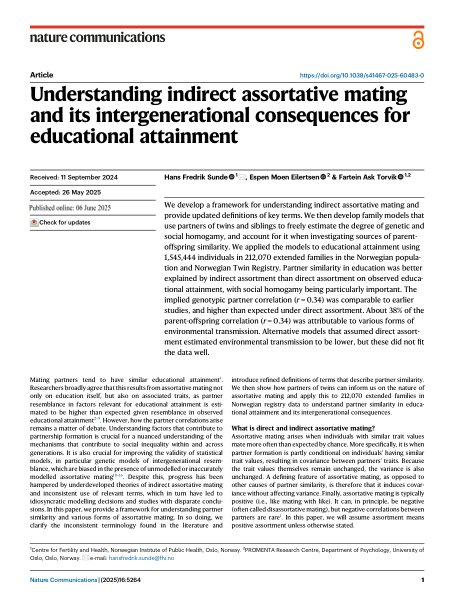

Understanding indirect assortative mating and its intergenerational consequences for educational attainment
Abstract
We develop a framework for understanding indirect assortative mating and provide updated definitions of key terms. We then develop family models that use partners of twins and siblings to freely estimate the degree of genetic and social homogamy, and account for it when investigating sources of parent-offspring similarity. We applied the models to educational attainment using 1,545,444 individuals in 212,070 extended families in the Norwegian population and Norwegian Twin Registry. Partner similarity in education was better explained by indirect assortment than direct assortment on observed educational attainment, with social homogamy being particularly important. The implied genotypic partner correlation (r = 0.34) was comparable to earlier studies, and higher than expected under direct assortment. About 38% of the parent-offspring correlation (r = 0.34) was attributable to various forms of environmental transmission. Alternative models that assumed direct assortment estimated environmental transmission to be lower, but these did not fit the data well.
doi:10.1038/s41467-025-60483-0Bluesky threadTwitter/X thread